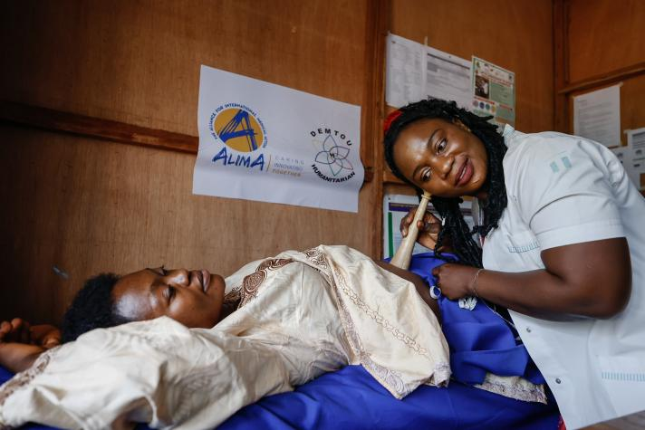
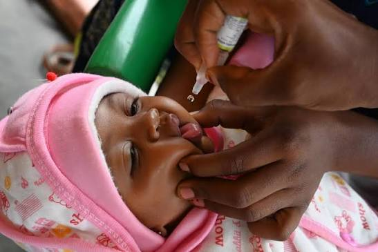
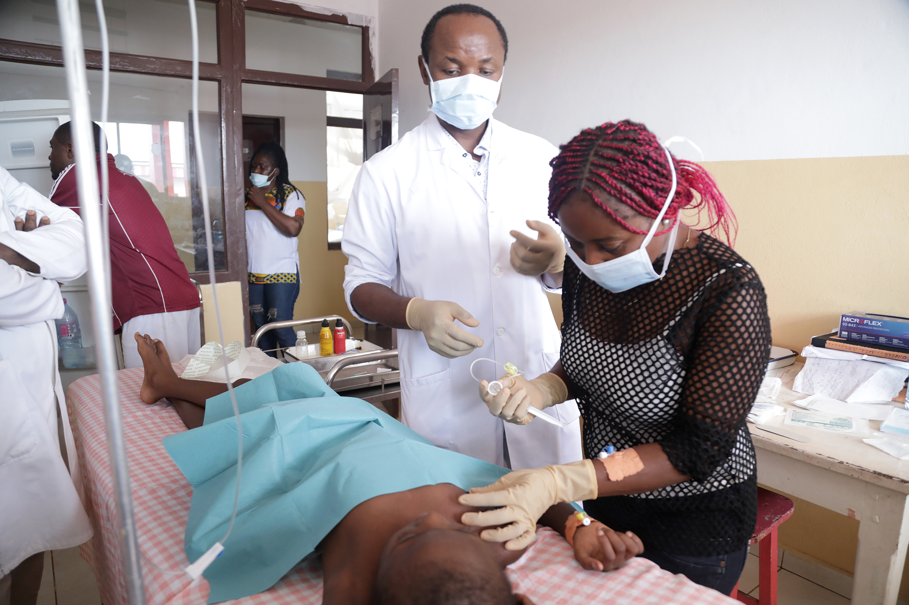

Prise des paramètres et administration des soins chez les patients.
Matériel : Thermomètre, Stéthoscope

mesure la température axillaire, la fréquence respiratoire (normale entre 30 et 60 cycles/min), la fréquence cardiaque, la coloration et le tonus.
matériel : Thermomètre électronique souple, Stéthoscope pédiatrique/néonatal

Assister l'équipe soignante lors des interventions chirurgicales et assurer la continuité des soins infirmiers en médecine générale, tout en garantissant la sécurité des patients et le respect des protocoles d'hygiène hospitalière.
Matériel : Champs stériles, pinces chirurgicales, Boîtes d'instruments, Tensiomètre, thermomètre.
Assurer la prise en charge globale des patients hospitalisés et contribuer à leur rétablissement.
Prévenir les infections associées aux soins et maintenir un environnement propre et sécurisé.